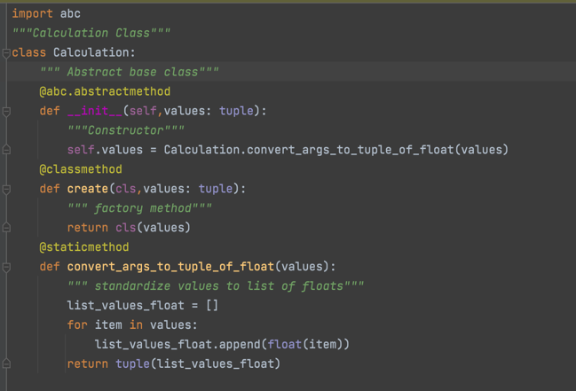

Understanding Object Oriented Programing
Introduction: What is Object-Oriented Programing?
Object Oriented Programing (OOP), is a pattern in programing that is build on the concept of objects that contain data and code which will modify the data. Objects are basically components of a system, that bundle together properties and behaviors. There are many coding programs that use OOP, such as Java, C++, and even python. So let's look at the basic principles of Object-Oriented Programing.
- Objects create dtat that defines the state and methods, which in turn defines the behavior. Every Object has these two things that make them unique.
- Their Object method implementation is invisible. In this manner, abstract state changes under a simplified external API
- Objects are instances of classes, which are in themselves blueprints for the objects.
- Classes can inherit states and behavior from other classes, and based on this, objects in th subclass support the casting into objects from parent class.
- The way the classes can inherit states and behaviors, allows for polymorphism, where the program can implicitly cast an object of a class to an object of the class’s parents or grandparents.
Understanding Classes and Inheritance in Python
Classes, to put simplistically, are user defined data types. The classes are the blueprints for the structure of methods and attributes. It is here where individual objects are instantiated. Inheritance on the other hand allows programmers to create classes within classes. With this kind of structure, it allows those classes to inherit the attributes and methods of the parent class, or it's ancestor classes. In our program we used multiple classes, but we will zoom in to look at one example. In the image above, we have our calculation class. It consists of the methods that are inherited by addition and multiplication classes, using the import statements. These two latter classes can use the import statements to basically inherit and pull the functions that are needed to carry their own. The heirachy is addition and multiplication are at the bottom and
Encapsulation in Classes
Encapsulation is when each object keeps their state private inside a class. This means that other objects do not have access to this state. The other objects can only call on a list of functions that are publicly available. If you notice at the image below, s that work on a single object can be packaged and therefore hidden from the user or outside coding.
So in the example above we see that we had a class Calculator, which becomes an object called calc. Within the object we have method called addition, which again is inside the calculator class. The end portion we have the method to get the test and get the answer through assertion. As seen the object is private inside a class and other objects in the class cannot have access to this state, unless they are public.
Polymorphism
Another aspect of OOP is polymorphism. The literal meaning of polymorphism is one that has many forms or signatures but the same function name, at least in programing. Basically, polymorphism is where a function with the same name can do different things, and this allows the functions or the arguments to use different types of entities at different occasions.In most polymorphism certain objects that be found in certain classes or referred to a certain class, they can be used in the same manner in a different class like a different object.
So on the top is our code for the division class in our calculator branch called refracted (the repo can be found here. Anyways, the original or the picture to the left is the parent class, and it contains all the history methods that we want our calculator to do. The test program to the right, we can call each of these methods and use them differently than how the parent classes uses them, basically creating its own variation.